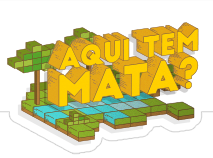

<!-- MENU -->
    <!-- >>> menu Home -->
    <div ng-if="isActive('/')">
        <!-- >> DESKTOP -->
        <div class="row hide-for-small-only">
            <div class="small-12 columns topo-home">
                <ul>
                    <div ng-include="'menuLink.html'"></div>
                </ul>
            </div>
        </div>
        <!-- / >> DESKTOP -->


        <!-- >> MOBILE -->
        <nav class="top-bar show-for-small-only" data-topbar role="navigation">
            <ul class="title-area">
                <li class="name">
                </li>
                <li class="toggle-topbar menu-icon li-bt-menu"><a href="#"><span></span></a></li>
            </ul>

            <section class="top-bar-section">
                <!-- Right Nav Section -->
                <ul class="">
                    <div ng-include="'menuLink.html'"></div>
                </ul>
            </section>
        </nav>
        <!-- / >> MOBILE -->

    </div>
    <!-- <<< menu Home -->


    <!-- >>> menu Resultado -->
    <div ng-if="!isActive('/')">
        <!-- >> DESKTOP -->
        <div class="topo-resultados hide-for-small-only">
            <div class="row">
                <div class="medium-3 columns logo-resultados">
                    <a href="#/">
                        
                        
                    </a>
                </div>
                <div class="medium-9 columns topo-paginas">
                    <ul>
                        <div ng-include="'menuLink.html'"></div>
                    </ul>
                </div>
            </div>
        </div>
        <!-- / >> DESKTOP -->


        <!-- >> MOBILE -->
        <nav class="top-bar show-for-small-only" data-topbar role="navigation">
            <ul class="title-area">
                <li class="name">
                    <h1>
                        <a href="index.html">
                            
                        </a>
                    </h1>
                </li>
                <!-- Remove the class "menu-icon" to get rid of menu icon. Take out "Menu" to just have icon alone -->
                <li class="toggle-topbar menu-icon"><a href="#/"><span></span></a></li>
            </ul>

            <section class="top-bar-section">
                <!-- Right Nav Section -->
                <ul class="left">
                    <div ng-include="'menuLink.html'"></div>
                </ul>
            </section>
        </nav>
        <!-- / >> MOBILE -->
    </div>
    <!-- <<< menu Resultado -->


<!-- / MENU -->
